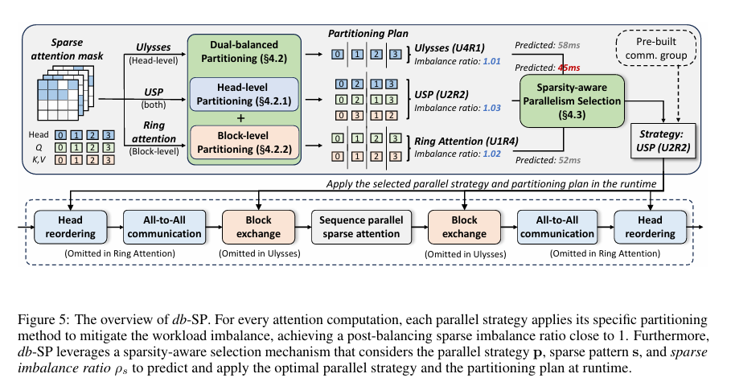
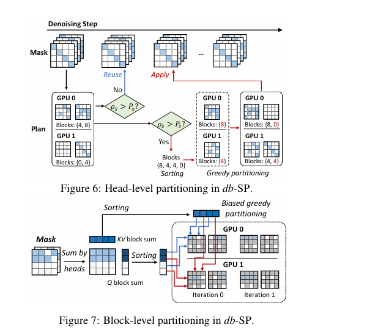

~/db-SP：稀疏注意力头并行和序列并行的负载均衡问题
Originally published on Zhihu 知乎 · 2026-01-30
考虑下面两个场景：
- 在多头注意力中，每个头的 Attention Map 会因为各种各样的原因长得不一样，比如 LLM 中有的头关注全局信息，有的头关注局部信息【参考 DuoAttention】；视频生成任务中有的头关注某一帧，有的头关注跨好多帧的一些位置的像素【参考 SparseVideoGen】。如果要做效果比较好的 sparse attention，可能需要根据输入在运行时动态确定 sparse mask，这会引入一些额外的开销，并且这些 sparse mask 破坏了各个 head 之间的负载均衡。
2. 稀疏化以后，每个 Query token 注意到的 K 和 V 可能不规律地分布在序列的各处，若此时采用类似 ring attention 的序列并行算法，也会导致负载不均衡。
第一个场景在head数足够多，大于等于GPU数时有一个直观的解法：可以把负载重的 head 和负载轻的 head 做配平，交换一些卡上的 head，尽量让每个卡上的负载接近。当各个卡性能规格都一致时且不考虑交换head到其它卡上的开销时，这个问题即同机调度问题[Identical-machines scheduling - Wikipedia]，我们的目标是最小化最大完工时间。在不进一步切分各个 head 的情况下，这是一个 NP-Hard 问题。
最长处理时间优先算法（LPT，Longest-processing-time-first scheduling）是该问题的一种贪心解法，即每次把处理时间最长的任务分片给当前最空闲的机器。
- 显然这个算法不一定能找到最优解，一个是因为无法进一步切分各个 head 的负载到完美均衡，另一个原因是无法处理例如 2 卡，5 个头负载为 [8, 7, 6, 5, 4] 这种情况，这个情况会跑出来 [8+5+4, 7+6] 这样的答案，但最优解是 [8+7, 6+5+4] 为 15。
- 但这个算法有理论最坏情况保证： 最坏情况下这个贪心可以达到最优算法的 $\frac{4m-1}{3m}$ 倍的耗时，其中 m 是机器数量（此处为 GPU 数）。
论文 [2511.23113] db-SP: Accelerating Sparse Attention for Visual Generative Models with Dual-Balanced Sequence Parallelism 尝试解决头级别和序列级别的负载不均衡，来加速用于视频生成的多头稀疏注意力。其包含基于 USP 开源代码 YunChang 开发的开源代码框架。

对于场景1，交换头的开销还是比较小的，直接跑贪心换头即可
对于场景2，此时 db-SP 假设已经实现了头级别负载均衡：每个 GPU 分到的序列（Q-block）对应的 dense block 数量（sparse mask 中非 0 的 block）不同，为了让 GPU 负载均衡，需要交换 Q-block；Ring-Attention 运行过程中是每个 GPU 固定住自己分到的 Q 分片（一系列 Q-block），和当前自己持有的 KV 分片（一系列 KV block）进行计算，并在计算完成后把 KV 分片传递给下一个 GPU，并从上一个 GPU 获得新的 KV 分片。每个 Q x KV 分片的组合有其对应的 sparse mask，故为了让每次迭代的负载（要计算的 dense block 数量）尽可能均衡，需要重新分配各 GPU 上的 Q 和 KV
- 对每个 Q-block 和每个 KV-block，其计算量定义为 sparse mask 分别按 KV-block 和按 Q-block 求和的结果。假设 sparse mask 对应的是 4 个 Q-block 和 4 个 KV-block，那就是 4x4 的 2D 矩阵，如果行号是 Q block index，列号是 KV block index，那么 Q-block 的计算量就是其对应行的 dense block 数之和，KV 同理为对应列 dense block 之和。
- 目标是把 Q-block 尽可能均分到各个 GPU 上使得它们总 dense 工作量相近，同时尽量让 Q block 留在原本的位置以减少通信开销。
- 此处还是按头重排的算法进行贪心，但每个 Q-block 的负载还加上了一个奖励：如果它分到它原本的 GPU 上，就当它的负载减少了一些。
- 在分完 Q 之后，对每一轮迭代每个 GPU 用哪些 KV block 也做上述思路的贪心。

db-SP 用简单贪心换来了有理论保证的性能，但还有优化空间。期待大家探索进一步切分负载，优化通信等方式来实现更完美的负载均衡
// EOF